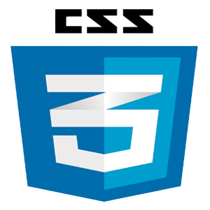

Welcome, my name is
Borja Temprano
|
Graphic Designer
About me
My tasks as a community manager at Orfeo Capital involved managing social networks, keeping both clients and potential clients updated on investment fund results, the strategies being implemented, and the strategic vision of the sectors and companies to invest in according to the company's position. Additionally, I was in charge of managing and preparing events hosted by the company to present the products and investment strategies. On the other hand, at Educaline, by managing social networks, I kept the entire community of teachers in each country informed not only of the constant updates of the product but also of new learning strategies designed by the Product department.
Tools I use:
- 
For more information, you can visit my LinkedIn profile.
Download my CV here